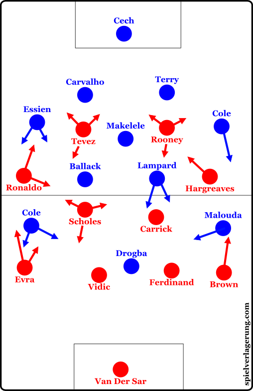

Sir Alex Ferguson’s tactical brilliance lay in his ability to adapt, dominate, and exploit his opponents. However, no strategy is invincible. Below is a detailed analysis of his most effective tactics and how opponents could disrupt and counter them.
Ferguson’s adaptive formations kept opponents guessing. A 4-4-2 could morph into a 4-5-1 or a 4-3-3 depending on the situation. However, outnumbering his midfield with a 3-5-2 or 4-2-3-1 can disrupt United's game plan.
His reliance on fast wingers created attacking opportunities from wide areas. To counter this, teams can use wing-backs to double-mark wide players and force United to attack centrally.
Ferguson’s teams were known for their lethal counters. To break this, opponents should dominate possession and use tactical fouling to delay United's fast breaks.
Ferguson’s ability to inspire players was unmatched. To counter this, teams need to maintain composure, slow the game, and frustrate key players to force mistakes.
His rotating squads ensured freshness, but teams can exploit unfamiliarity by attacking areas where rotations are frequent.
United excelled in set-pieces. Zonal marking and quick defensive resets can prevent them from capitalizing on these opportunities.
José Mourinho is renowned for his pragmatic and defensive approach to football. His philosophy centers around organization, compact defending, and quick counter-attacks. Over the years, he has built teams that thrive under pressure, but like any tactical system, it has weaknesses that can be exploited.
Mourinho’s teams often rely on a low block, with players maintaining a compact shape in defense. This frustrates opponents by limiting spaces between the lines and forcing them wide.
Mourinho’s teams are masters at turning defense into attack. They absorb pressure and then break forward with speed through players like Hazard, Son, or Ronaldo.
Set-pieces are a critical part of Mourinho’s strategy. His teams often rely on tall, physical players to dominate in the air.
Mourinho is a master at creating tension and using mind games to unnerve opponents. He often makes bold statements to shift pressure onto the opposition and deflect criticism from his team.
Mourinho is known for maintaining a core group of trusted players and relying heavily on them throughout the season. This can sometimes lead to fatigue and player burnout.
"The best teams are those that know how to win even when they are not playing well." – José Mourinho
Utilizes formations like 4-3-3, 4-4-2, and 4-2-3-1 based on players and opponents.
Emphasizes fluid attacking play with interchangeable positions to confuse opponents.
Focus on dominating possession; quick pressing can disrupt control.
Teams are compact; exploit gaps in their structure during transitions.
Well-prepared for set pieces; analyze routines for countering and scoring opportunities.
Tailors strategies to individual strengths; neutralizing key players is crucial.
Effective in-game adjustments; observe substitutions and tactical shifts.
By studying these tactics and analyzing match footage, you can develop strategies to effectively counter Carlo Ancelotti's approach.
An in-depth analysis of Barcelona's goal-scoring strategy
This video features a detailed analysis of Barcelona's recent goal, explained by a football expert. The breakdown covers the build-up, positioning, and tactics used to create a scoring opportunity and break down the opposition’s defense.
Key takeaways include positioning strategies, off-the-ball movement, and the coordination required to effectively exploit spaces within the opposing team's formation.
To break a 4-3-3 formation, one effective tactic is to overload the wings. This tactic involves positioning players in a way that outnumbers the opponent’s defenders on the sides of the field.
This tactic forces the opponent's defense to either stretch wide, opening up central spaces, or risk a 2v1 disadvantage on the wing.
Another method is to exploit the space between the opponent’s midfield and defensive lines. In a 4-3-3, there can be a gap here, especially when the midfielders push forward.
This strategy uses the natural gaps in a 4-3-3 to create scoring chances and unsettle the defense.
A quick transition from defense to attack can catch a 4-3-3 formation off guard. This tactic relies on moving the ball rapidly up the field before the opponent’s defensive structure is set.
This approach takes advantage of moments when the opponent's midfield and defense are unorganized, leading to fast break opportunities.